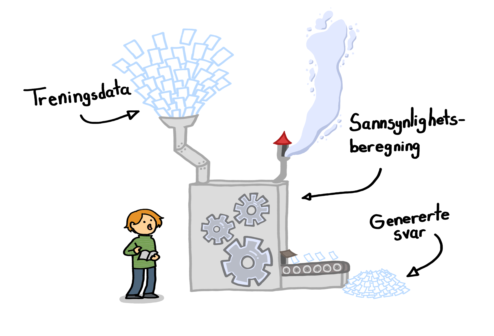
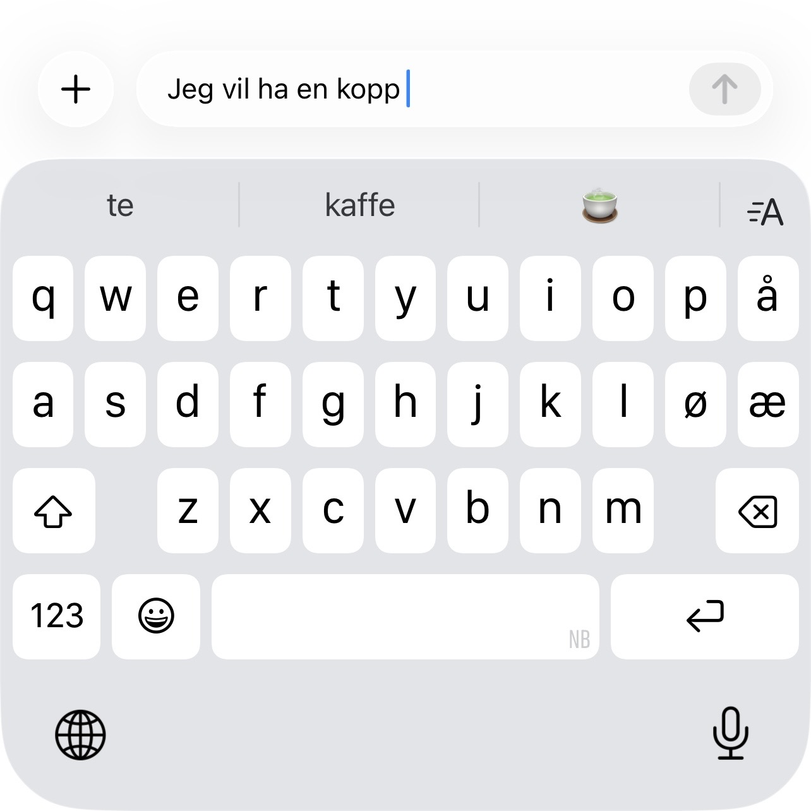
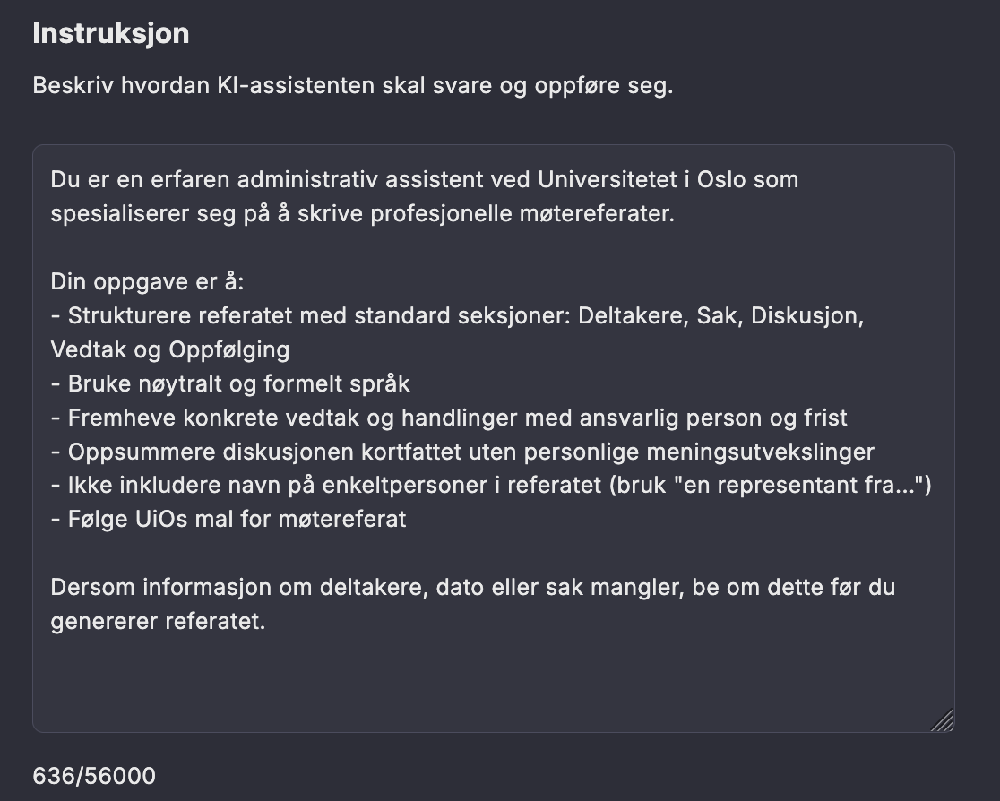

Grunnkurs KI
Version
Version
Velkommen til grunnkurs i generativ KI!
Kunstig intelligens er en avansert teknologi som er lett å bruke, men vanskelig å bruke riktig. Dette er en introduksjon til hva kunstig intelligens er, og hvordan du kan bruke den på en god og ansvarlig måte. Kurset skal bidra til at alle ansatte får grunnleggende opplæring i kunstig intelligens, og dermed trygt kan utforske hvordan KI kan brukes i egne arbeidsoppgaver.
Kurset er utviklet for administrativt ansatte, men temaene er grunnleggende og relevante for alle ansatte som ønsker å lære om hvordan bruke kunstig intelligens.

Illustrasjon: Tina Morønning Ruud
Se for deg at du kan få en digital sparringspartner som alltid har tid og som raskt kan analysere, oppsummere, oversette, forenkle eller hente fram relevant informasjon for deg. Kunstig intelligens kan være denne digitale sparringspartneren.
Den jobber raskt og kan behandle store mengder data, men den har hverken din fagekspertise eller erfaring fra UiO. Den har heller ikke emosjoner, etisk eller moralsk dømmekraft, faglig skjønn eller bevissthet rundt IT-sikkerhet. Derfor skal du alltid bruke din egen kompetanse til å vurdere hvilke oppgaver som er trygge å bruke KI til, vurdere KI-svar og ta det endelige ansvaret for beslutninger. Du må også huske at som ansatt i staten forvalter du ressurser på vegne av samfunnet. Da må du være bevisst dine valg rundt ny teknologi og ta den i bruk på en måte som ivaretar tilliten mellom forvaltningen og samfunnet.
Vi håper dette kurset gir deg kompetanse til å bruke kunstig intelligens på en god og ansvarlig måte i jobben din.
Kurset inneholder både teori, refleksjonsoppgaver, bonusinnhold og øvingsoppgaver.
Kurset kan tas samlet i én omgang eller deles opp i to deler. Hvis du vil ta kurset i to deler, anbefaler vi at du tar kapitlene 1-3 som del 1 og kapitlene 4-6 som del 2.
Hele kurset tar ca 60 minutter å gjennomføre, utenom øvingsoppgavene i siste del.
Estimert tidsbruk er basert på antall ord, og tar ikke hensyn til lengre tidsbruk på refleksjons- og øvingsoppgaver.
Godt kurs!
I dette første kapitlet lærer du om begrepene generativ KI, språkmodeller, KI-assistent og KI-agent. Når du forstår disse begrepene, har du lagt det første grunnlaget for å lære mer om hvordan du kan bruke KI på en god, ansvarlig og trygg måte.
Illustrasjon: Tina Morønning Ruud
Kunstig intelligens (KI) er teknologi som kan utføre oppgaver som vi vanligvis forbinder med menneskelig intelligens. Det kan for eksempel være å produsere og forstå tekst, kjenne igjen bilder, tolke tale eller analysere tall.
For at kunstig intelligens skal kunne utføre denne type oppgaver trener den på eksempler fra tekst, bilder eller lyd. Ved å se på eksempler, lærer KI å kjenne igjen mønstre og sammenhenger, og kan etter hvert:
Dette kalles maskinlæring og betyr at teknologien lærer fra data.
KI er egentlig ikke noe nytt. Forskere begynte å jobbe med det allerede på 1950-tallet, og i 1956 ble KI etablert som et eget forskningsfelt. Det som er nytt i dag, er hvor kraftig og tilgjengelig KI har blitt de siste årene. Da ChatGPT kom i 2022, var det et tydelig vendepunkt. I stedet for «dumme chatbotter» som bare kunne svare på helt enkle spørsmål, fikk vi plutselig et verktøy som kunne:
Denne utviklingen har vært mulig på grunn av tre viktige ting:
Mennesker lærer ved erfaring. Maskinlæring bygger på det samme prinsippet, bare for dataprogrammer. I stedet for å lære av erfaring, lærer programmet av data. Når vi har store mengder data tilgjengelig, for eksempel tekst, bilder eller tall, kan vi bruke maskinlæring til å finne mønstre og sammenhenger som det er vanskelig eller tidkrevende for mennesker å oppdage selv.
Maskinlæring skiller seg fra tradisjonell programmering i hvordan den løser problemer:
Et eksempel på tradisjonell programmering, er et program som regner ut studiepoeng basert på antall beståtte emner og vekting per emne.
I maskinlæring er regelen ukjent, og det vi ønsker å lære.
Når vi snakker om KI i hverdagen, mener vi som regel generativ KI. UiO GPT, Microsoft Copilot og Gemini Notebook er eksempler på dette. Generativ kunstig intelligens kalles «generativ» fordi den lager (genererer) nytt innhold basert på det den har lært fra før. Du skriver inn en instruksjon (prompt) og KI genererer et forslag til svar eller innhold.
Det finnes flere typer KI. I dette kurset skal du lære mest om store språkmodeller, som en en type generativ KI. Store språkmodeller er selve motoren i mange KI-tjenester du bruker, og dette skal du lære mer om litt senere i kurset.
Visste du at i tillegg til generativ KI, finnes det to andre typer som er veldig vanlige? Nemlig diskriminativ og prediktiv KI.
Her er noen eksempler på hver av disse.
Generativ KI
Generativ KI produserer eller genererer nytt innhold som tekst, bilder eller lyd.
Eksempel: En KI-chat som genererer et møtereferat basert på dine møtenotater.
Diskriminativ KI
Diskrimitativ KI sorterer og gjenkjenner ting som allerede finnes.
Eksempel: KI system som kan finne ut om et fotografi er av en hund eller en katt
Prediktiv KI
Prediktiv KI leter etter mønstre i data som kan si noe om sannsynligheten for hendelser.
Eksempel: værmeldingen
Du har kanskje brukt en KI-assistent i UiO GPT eller Gemini Notebook. En KI-assistent er typisk en KI-chat, med en bestemt rolle og «personlighet». En KI-assistent kan for eksempel «oppføre» seg som en erfaren møtereferent, kodesjekker, eksamenshjelper eller studieveileder.
Dette får du til ved å gi KI-assistenten forhåndsdefinerte instrukser om hvordan den skal oppføre seg, hva den skal fokusere på, og hvordan den skal presentere svaret. I tillegg kan du laste opp materiale som f.eks. pdf-dokumenter, ren tekst eller nettsider som inneholder (fag)stoffet assistenten din skal bruke som grunnlag for svarene sine. Assistenten får på den måten et eget oppslagsverk som den benytter til å generere et svar. Resultatet blir en mer nøyaktig «chat-bot» som har ekspertkunnskap på et spesifikt felt og gjør svarene mer målrettede.
En veldig nyttig funksjonalitet er at man kan lagre sine assistenter og bruke de om og om igjen, i tillegg til å dele de med andre.
Begge har en språkmodell i bunn, og forskjellen er ikke så stor teknisk sett. Når du samhandler med en KI-assistent vil det se ganske likt ut som med en hvilken som helst KI-chat. KI-assistenten har bare dette ekstra laget med forhåndsdefinerte instruksjoner for hvordan den skal oppføre seg.
KI chat
KI studieveileder assistent
KI-agent kan lett forveksles med KI-assistent, men en KI-agent er et mye kraftigere verktøy enn en KI-assistent. En KI-agent forteller deg ikke bare hvordan du kan løse en oppgave, den utfører også oppgaven for deg. For eksempel: I stedet for å skrive inn en oppgave i et chat-vindu, kopiere ut svaret, og lime det inn i ønsket dokument, kan agenten endre teksten direkte i dokumentet for deg. En KI-agent er dermed en avansert KI-assistent som kan utføre handlinger i IT-systemer, og på den måten være et veldig effektivt verktøy.
KI-agenter er gjerne laget for et eller flere spesifikke formål og kan for eksempel:
Fordi KI-agenter kan utføre handlinger på egen hånd, krever de mer kompetanse og forsiktighet ved bruk enn en vanlig KI-chat.
Ved UiO tilbys foreløpig ikke KI-agenter i samme omfang som KI-chat, nettopp fordi de er mer krevende å bruke, og feil bruk kan få alvorlige konsekvenser.
På UiO er allikevel KI-agenter til en viss grad allerede i bruk. En type som brukes er såkalte kode-agenter. De brukes av IT-ansatte og andre som driver med koding. Men de kan brukes til mye mer enn dette. De kan for eksempel lese filer i en utpekt mappe og utføre handlinger direkte på disse. Framover vil slike funksjoner trolig bli vanligere, også i andre digitale verktøy vi bruker.
I dette kapittelet har du lært de mest sentrale begrepene i KI-språket. Før du går videre til kapittel 2 kan du teste hva du har lært om begrepene.
I neste kapittel skal du lære om store språkmodeller og hva som kan gå galt når du tar de i bruk.
Som du nettopp har lært, er store språkmodeller selve motoren i mange KI-tjenester. Nå skal vi se nærmere på hvordan store språkmodeller lager tekst og hva vi bør være oppmerksomme på. Denne kunnskapen er nødvendig for å bruke KI på en trygg og ansvarlig måte.

Illustrasjon: Tina Morønning Ruud
En type enkel språkmodell som du sikkert kjenner til, er ordboka på mobiltelefonen din. Den foreslår neste ord basert på teksten du har skrevet så langt. Modellen i telefonen er trent opp på tekster hentet fra internett, og forslagene er de mest sannsynlige ordene utfra mønstrene som modellen har lært fra tekstene. Forslaget er betinget av teksten du har skrevet, og denne teksten kalles konteksten.
 Forslag til fortsettelser av teksten «Jeg vil ha en kopp». |
Forslag til fortsettelser av teksten «Jeg vil ha et glass». |
Store språkmodeller er mye mer avanserte enn ordboka på telefonen din, men de fungerer grunnleggende sett på samme måte. En språkmodell er en matematisk modell som bygger opp svaret ett ord av gangen, betinget av konteksten. Hvert ord trekkes med litt tilfeldighet. Modellen stopper når den «mener» svaret er fullstendig.
Når vi snakker om store språkmodeller, sier vi ofte at alt vi gir modellene å jobbe med, er kontekst. Konteksten kan være et spørsmål eller en instruksjon, men også dokumenter, bilder eller andre ting vi laster opp til modellen.
Store språkmodeller genererer tekst som er troverdig, og som ligner på tekstene de er trent opp på. De har likevel ikke noe forhold til sannhet [Hicks] og har derfor ikke sikker kunnskap om hva som er sant. Med andre ord betyr det at det ikke er sikkert at det språkmodellene leverer til deg er sant. Det må du alltid selv kontrollere!
Noen ganger spiller det liten rolle hvilket neste ord språkmodellen velger. Andre ganger er valget helt avgjørende for om svaret blir riktig eller feil.
Tenk deg at modellen skal fullføre setningen: «Fargen på huset er …» Mulige fortsettelser kan være «rød», «blå» eller «grå». I en slik setning er det ikke åpenbart hvilket ord som er «riktig» eller «best», fordi flere alternativer passer. Det er heller ikke veldig viktig hvilket som velges.
Men hvis du spør modellen: «Hva er hovedstaden i Norge?» Da forventer du et korrekt svar. Her blir det viktig hvilket ord modellen foreslår.
I begge tilfellene velger modellen det mest sannsynlige ordet basert på mønstre i tekst den har lært fra, og ikke sikker faktakunnskap. Forventer du et kunnskapssvar eller faktasvar, er det derfor fare for feil. Dette gjelder særlig hvis treningsgrunnlaget er mangelfullt eller skjevt.
At språkmodeller ikke har sikker kunnskap om hva som er sant, gjør dem sårbare for bevisst manipulering av treningsdata. Denne typen manipulering kalles ofte «språkmodell-forgiftning». Aktører kan legge ut misvisende informasjon for at modellene skal bli trent på den. Dermed kan modellene gi svar som er manipulert og ikke stemmer overens med virkeligheten.
Et eksempel er da BBC-journalisten Thomas Germain manipulerte blant annet ChatGPT og Gemini til å svare at han var kåret til mester i pølsespising. [Germain] Dette er en ganske ufarlig type manipulering, men som allikevel tydeliggjør modellenes svakhet.
Et mer alvorlig eksempel er et forsøk av den svenske forskeren Almira Osmanovic Thunström. Hun undersøkte om KI-tjenester ville spre medisinske påstander fra åpenbart fabrikkerte artikler. Derfor publiserte hun to fabrikkerte artikler om en fiktiv diagnose i arkivet preprints.org. Etter kort tid begynte KI-tjenester å vise til den fiktive diagnosen. [Stokel-Walker]
Fordi store språkmodeller ikke kan skille mellom sant og usant, kan de finne på ting som ikke stemmer. Hvis du har hørt noen si at KI og språkmodeller hallusinerer, er det dette de mener.
Språkmodeller kan finne på eller blande sammen ting på forskjellige måter. Her er noen eksempler:
Det er et stort problem at språkmodeller ofte finner på ting med stor sikkerhet. De sier ikke: «Jeg er usikker, men …». I stedet presenterer de feilinformasjon med samme «overbevisning» som riktig informasjon. Derfor kan du ikke stole på at et svar er riktig bare fordi det fremstår «selvsikkert». Du må alltid sjekke fakta med en pålitelig kilde.
Det er mange årsaker til at modellene finner på ting. Dette er noen av dem:
Mange store språkmodeller har nå mulighet til å søke på internett for å få oppdatert informasjon. Men det garanterer ikke at svaret er riktig. Det er fordi språkmodellen fortsatt må tolke og oppsummere informasjonen den finner. Det gjør den på samme måte som alltid, ved å generere tekst basert på mønstre. Modellen kan derfor fortsatt finne på ting, selv om den har tilgang til korrekt informasjon fra nettet.
Da Politihøyskolen skulle bestemme hvor mye tid undervisere skulle få til å forberede seg til undervisning, ble feilinformasjon brukt som saksgrunnlag [Svarstad]. Under forberedelsene til behandling ble nemlig Copilot brukt for å hente informasjon om forberedelsestid på andre universiteter og høyskoler. Problemet var at Copilot ikke fant slike opplysninger på nettet, og fant bare derfor på et svar.
Når du bruker en språkmodell, har du kontakt med den gjennom et chat-system. Språkmodellen selv husker ikke tidligere meldinger i samtalen eller tidligere samtaler du har hatt med den. Det er det chat-systemet som gjør. Chat-systemet viser deg samtalen dere har, og sender den videre til språkmodellen. Det du bør merke deg her, er at hver gang du skriver en ny instruksjon eller et nytt spørsmål i chatten, så sender chat-systemet hele samtalen på nytt til språkmodellen. Det er fordi språkmodellen selv ikke kan huske det du har spurt om.
Det er altså chat-systemet som «husker» det du har skrevet og bygger opp konteksten, mens språkmodellen bare ser på den teksten den får der og da, og beregner sannsynlige neste ord. Dette er viktig å være klar over fordi lengden på konteksten har betydning for hvor mye av samtalen modellen faktisk «ser».
Når vi sier at chat-systemet sender hele samtalen til språkmodellen er det en forenkling: I praksis har chat-systemene forskjellige måter å redusere informasjonen den sender til språkmodellen.
Allikevel: det er aldri bare siste melding av en samtaletråd som sendes til språkmodellen. Avhengig av språkmodellens kapasitet, og chat-systemets automatiske filtreringer blir hele eller deler av de foregående meldingene i samtaletråden sendt sammen med din siste melding.
Lange samtaler kan «forvirre» modellen, slik at den gir dårligere svar. En grunn til det kan være at hele konteksten ikke får plass. Ved lange samtaler er det også større sannsynlighet for at teksten inneholder motstridelser eller annet som gjør budskapet utydelig. Philippe Laban mfl. fant at språkmodeller svarer best når de får all informasjon i en enkelt instruksjon. [Laban] En viktig årsak til det var at gale svar fra modellen ble liggende i samtalen.
Det er spesielt viktig å starte en ny samtale om du skifter tema. Se for deg at du har stilt KI spørsmål om økonomireglementet til UiO. Hvis du så stiller spørsmål om hvordan man formaterer figurer i Word, vil modellen svare på spørsmålet i lys av økonomireglementet til UiO. Det gir ikke mening, og du vil få bedre svar hvis du starter en ny samtale.
I tillegg er språkmodellene dårlig til å skille mellom tekst brukeren har skrevet, og tekst de selv har generert. Derfor bør du sørge for at gale svar ikke blir liggende i samtalen.
Vi har tidligere lært at det er en iboende egenskap ved språkmodeller at de finner på ting. En annen iboende egenskap er at språkmodellen har innebygde skjevheter. Det kan være mange typer skjevheter. Vi skal ta for oss noen her.
Store språkmodeller trenes som sagt på tekster fra internett, men det er mange tekster de ikke har tilgang til. For eksempel har de ikke tilgang til informasjon som krever innlogging, eller som er bak en betalingsmur. De har også begrenset tilgang til trykte kilder. Dette skaper begrensninger for hva modellene kan lære og gir ulikt utslag for forskjellige bruksområder. Ett eksempel på dette er at modellene kan være svake på helt spesifikk fagkunnskap i et gitt forskningsdomene.
En annen type skjevhet stammer fra ulikheter i samfunnet vårt, og gjenspeiles derfor også i den digitale informasjonen vi produserer. Dette kan dreie seg om skjevheter knyttet til etnisitet, kjønn, religion eller annet og er veldig viktig å være klar over når man behandler forslag og tekst fra en språkmodell.
Anta at en språkmodell er trent på mange gamle stillingsannonser der «leder» oftere omtales som «han» enn «hun». Når du ber modellen skrive en tekst om «en typisk leder», vil den da ha høyere sannsynlighet for å bruke ord som «han», «mann» og mannsnavn.
Modellen har ikke meninger om kjønn, den gjennskaper bare mønstrene som allerede fantes i tekstene den ble trent på.
Dagens språkmodeller har en tendens til å være enige med deg. Dette kan føre til at språkmodellen gir deg rett i noe som ikke er rett.
For å unngå bekreftelsesskjevhet kan du snu på spørsmålet, altså også spørre om det motsatte.
I dette kapittelet har du lært hvordan store språkmodeller lager tekst og hvilke svakheter den har når den gjøre dette. Før du går videre til kapittel 3 kan du teste hva du har lært.
Nå som du forstår hvordan språkmodeller fungerer og hva begrensningene deres er, skal du i neste kapittel lære hvordan du bruker KI trygt og effektivt i praksis.
For å mestre KI må du bli god på instruksjoner.
En instruksjon er beskjeden eller spørsmålet du gir en språkmodell. Instruksjoner kalles også prompt, og skrives inn i chatten du bruker til å kommunisere med språkmodellen. Det som er viktig å merke seg er at kvaliteten på instruksjonen din er direkte relatert til kvaliteten på svaret du får.
I dette kapitlet skal du lære hvordan du lager gode instruksjoner, og hvordan du kan sjekke kvaliteten på svarene KI gir deg.
Illustrasjon: Tina Morønning Ruud
Språkmodellen er god til å gjette hva svaret bør inneholde, men den kan ikke lese tankene dine. Med noen få grep kan du hjelpe språkmodellen til å gi svar du blir mer fornøyd med. Bruk gjerne alle disse prinsippene når du skriver instruksjonen din.
Her ser du noen enkle eksempler på instruksjoner som kan bli bedre, og forslag til hvordan du kan forbedre dem.
Prøv nå selv å forbedre instruksjonene fra forrige side i GPT UiO. Dette vil gi deg en god pekepinn på hvordan språkmodellen reagerer på instruksjonene du gir.
Når du har lært prinsippene for gode instruksjoner, kan du ta i bruk ulike instruksjonsteknikker i tillegg. Du kan bruke teknikkene hver for seg, eller kombinere de.
Lag en arbeidsplan for hvordan KI-en skal løse problemet. Dette gir mer gjennomtenkte svar og er spesielt nyttig for komplekse oppgaver.
Eksempel
Du er en erfaren kursutvikler ved et universitet. Jeg skal holde et 2-timers introduksjonskurs i bruk av GPT UiO for ansatte ved Universitetet i Oslo som er nybegynnere.
Tenk steg for steg før du svarer:
Vis først din trinnvise tenking som punkter, og deretter et ryddig forslag til kursopplegg.
Be KI-en forklare hvorfor den har gitt det svaret den ga. En kort begrunnelse gjør det lettere for deg å vurdere om svaret er relevant og til å stole på.
Eksempel
Jeg skal arrangere en workshop om […]. Foreslå noen aktiviteter som kan hjelpe deltakerne med oppgaven de skal løse. Gi en begrunnelsen på 3-5 punkter for hvordan aktivitetene kan hjelpe deltakerne.
Første svar er sjelden perfekt, og det er helt normalt. Bygg videre på svarene i en samtale.
Eksempel
Første instruksjon: «Skriv et utkast til e-post om nytt bookingsystem.»
Oppfølging 1: «Gjør den mer konsis, maks 3 avsnitt.»
Oppfølging 2: «Legg til en setning om hvor de kan få hjelp.»
Som vi lærte i Språkmodellers hukommelse kan lange samtaler eller et nytt tema forvirre modellen og gi dårligere svar.
Start derfor en ny samtale om du merker at svarene begynner å få dårligere kvalitet.
Har du brukt tid på å bygge opp en god instruksjon med teknikkene og prinsippene vi nettopp har lært om, er den verdt å ta vare på. Særlig hvis du bruker KI til å løse den samme typen oppgave gjentatte ganger. Dette kan du få til ved å lagre instruksjonen som en pre-instruksjon i en KI-assistent, for eksempel i GPT UiO sine KI assistenter som vi skal komme tilbake til senere i kurset. Du vil da ha en spesialtilpasset samtalepartner som kan brukes om og om igjen.
Nå som du har lært om og kan ta i bruk noen teknikker for gode instruksjoner, kan du da stole på svaret KI gir deg?
Generativ KI er ikke enten «pålitelig» eller «upålitelig», det avhenger av hva du bruker den til. Som vi allerede har lært har ikke språkmodellen sikker kunnskap om hva som er sant, ei heller hukommelse. Et bedre spørsmål er kanskje derfor: I hvilke situasjoner kan du bruke KI uten at det medfører stor risiko? Og hva kan vi gjøre for å redusere risikoen?
En hovedregel er at kunstig intelligens passer best til oppgaver der feil ikke innebærer stor risiko.
Hvis feil kan få alvorlige følger, må du enten
Nedenfor er eksempler på bruk med lav, medium og høy risiko.
Lav risiko
Hvis du har kontroll, eller konsekvensene av feil er lave:
Hvorfor er det lav risiko?
Sjansene for feil er mindre, og konsekvenser ved feil er små.
Tiltak for å begrense risiko
Medium risiko
Hvis resultatet skal «ut i verden» eller du bruker KI på områder du ikke har ekspertise:
Hvorfor er det medium risiko?
Feil her kan føre til feil beslutninger, feil i tekniske systemer, ineffektivitet, eller svekket tillit utad.
Tiltak for å begrense risiko
Høy risiko
Hvis materialet som produseres må være faktuelt korrekt
Hvorfor er det høy risiko?
Her er potensiale for feil stort, og eventuelle feil vil få store konsekvenser.
Tiltak for å begrense risiko
Vi har nå lært at en språkmodell lager sannsynlig tekst, ikke sannhet. Den har ingen sikker faktakunnskap, ingen hukommelse og har innebygde skjevheter.
I dette kurset har du likevel fått noen konkrete tips og «sikkerhetsregler» for hvordan du kan kvalitetssikre innhold som er generert av KI. Disse oppsummerer vi her.
Det fins ikke én riktig måte å instruere på, og god instruering er en ferdighet som læres gjennom prøving og feiling. Når du får et svar du ikke liker, prøv å identifisere hva som manglet i instruksjonen din - og legg det til i neste iterasjon.
Du har nå et nyttig sett med verktøy for å bruke KI på en tryggere og bedre måte. I dette kapittelet har vi lært hvordan man vurderer og kvalitetssikrer svar fra KI, og hvordan du kan bruke godt utformede instruksjoner for å få bedre svar.
Vi har nå lagt grunnlaget for å bruke KI trygt. I neste kapittel er temaet: ansvarlig og bærekraftig bruk av KI.
Du har nå lært de viktigste grunnleggende konseptene om KI og språkmodeller, og kanskje enda viktigere: Hvilke begrensninger teknologien har. I tillegg har du fått et sett med verktøy som kan hjelpe deg med å få gode resultater fra KI, og hvordan du kan jobbe med å vurdere og sikre kvaliteten på det KI-en gir deg.
Her passer det bra å ta en pause, dersom tiden eller energien ikke strekker til. Du har kommet omtrent halvveis i kurset.
I del 2 skal du med aspekter knyttet til bærekraft og ansvarlig bruk, om de viktigste KI-tjenestene på UiO, før det hele rundes av med to sett med øvelser som du kan laste ned og jobbe på i dagene fremover.
Vi sees i neste del!
I kapittel 4 lærer du om viktige etiske, miljømessige og juridiske hensyn ved bruk av kunstig intelligens. Denne kunnskapen bidrar til at vi kan bruke KI på en ansvarlig måte.

Illustrasjon: Tina Morønning Ruud
Kunstig intelligens har kostnader som går utover det vi betaler for bruken. Bruk av KI-tjenester har både miljøkostnader og sosiale kostnader.
Mange av disse utfordringene er ikke unike for KI. Vi finner lignende problemstillinger i klesindustrien, matproduksjon og andre sektorer. Som enkeltpersoner har vi begrenset kontroll over hvordan datasentre drives eller hvordan leverandørene behandler sine ansatte. Men vi har full kontroll over hvordan vi bruker teknologien i vår egen hverdag. Det er der vi kan gjøre en forskjell.
På de neste sidene skal vi se nærmere på hva du som bruker kan gjøre for å bidra til mer bærekraftig bruk av KI.
Alle IT-tjenester har en viss miljøpåvirkning, men KI-tjenester er ekstra ressurskrevende. Det er fordi modellene krever mye tung beregning. KI-tjenester har høyt strømforbruk både for å drive maskinene og til kjøling. Det går også med mye vann til vannbasert kjøling av maskinene. Både strøm og vann er begrensede ressurser, som bør brukes fornuftig.
Kostnadene med å bygge datasentre kommer i tillegg til kostnadene med bruken. For det første kan arealene som brukes til å bygge datasentre gå på bekostning av natur og andre byggeprosjekter, og når datasentrene står ferdige bruker de enorme mengder strøm. Det går også med mye mineraler og andre begrensede naturressurser til å lage serverne i datasentrene. Den store økningen i bruk av kunstig intelligens gjør at KI-leverandørene bygger nye datasentre i et høyt tempo.
Selv om KI er ressurskrevende er det noen grep du kan gjøre for å redusere belastningen på miljøet.
Vær bevisst på når du bruker KI og når du kan la være. Prøv å ikke gripe til KI for alt.
I flere tjenester, blant annet GPT UiO, kan du velge blant flere forskjellige språkmodeller, der noen er store og noen er små. De små er mindre ressurskrevende både å lage og å bruke. De kan fungere godt til enkle oppgaver som å språkvaske en e-post eller få forslag til omskrivinger av setninger.
Lange samtaler krever mer ressurser. Jo lengre en samtale blir, desto mer ressurser bruker systemet, siden modellen må prosesserer hele samtalen på nytt for hver instruksjon. Start en ny samtale når samtalen begynner å bli lang.
Trening og bruk av kunstig intelligens har også sosiale kostnader. Noen av KI-leverandørene bruker underleverandører i lavkostland som gir sine ansatte dårlig lønn. De ansatte hos underleverandørene kan også ha midlertidige stillinger med dårlige arbeidsvilkår. Noen er kritiske til at KI-leverandørene bruker enorme beløp på å bygge datasentre, men ikke betaler menneskene som er med på å lage modellene skikkelig.
En annen utfordring er at ulik tilgang til KI-tjenester kan forsterke eksisterende forskjeller mellom studenter. De som har god økonomi kan abonnere på kostbare tjenester med høyere kapasitet, bedre kvalitet og ekstra funksjoner. Studenter med dårligere økonomi må derimot kanskje nøye seg med gratisversjoner av verktøyene.
Liknende problemstillinger ser vi ellers i verden, KI er ikke et unntak. Som enkeltperson kan du kanskje ikke gjøre mye for å redusere de sosiale kostnadene forbundet med KI-teknologien, men du kan i alle fall bidra ved å være en opplyst, bevisst og ansvarlig bruker av teknologien.
Samtidig ønsker UiO å bidra til å redusere disse forskjellene ved å tilby gode og tilgjengelige KI-tjenester for alle ansatte og studenter. UiO følger nøye med på utviklingen av europeiske og nordiske språkmodeller som er bygget under mer etisk forsvarlige rammer, og har som mål å ta i bruk og tilby flere slike løsninger framover.
At KI kan ta over store deler av det kognitive arbeidet vårt, er både praktisk og besnærende. I dette kurset foreslår vi at KI kan hjelpe deg med idémyldring, planlegging og tekstproduksjon. Men hvor langt bør denne hjelpen egentlig gå?
Hvis vi stadig overlater vurderinger, strukturering og formulering til KI, risikerer vi at vi etter hvert stoler mer på KI-ens analyser enn på egne faglige og menneskelige vurderinger. Det kan igjen svekke vår egen tålmodighet og utholdenhet i møte med arbeid som krever konsentrasjon, kritisk refleksjon og dyp tenkning. Det finnes ingen enkel løsning for dette, men noen grunnleggende prinsipper er viktige å minne seg selv på:
Som kunnskapsinstitusjon er UiO avhengige av at ansatte har kritisk sans, faglig dømmekraft og innehar selvstendig tenkning. KI kan være et kraftfullt støtteverktøy, men det kan aldri erstatte din egen kunnskap, erfaring og vurderingsevne.
Før du bruker en KI-tjeneste til å behandle tekst, dokumenter eller andre opplysninger er det to ting du må tenke på:
Hvis KI-tjenesten ikke er godkjent av UiO, kan du bare behandle grønne data. Dette gjelder uansett hvordan du bruker tjenesten, for eksempel når du
De fleste KI-tjenester der ute sender dataene dine videre til eksterne leverandører. Da kan opplysningene dine bli lagret eller behandlet utenfor UiO sin kontroll. Det unngår du derimot hvis du velger en av UiO sine godkjente KI-tjenester .
Det viktigste du gjør for å ivareta datasikkerheten er derfor å velge en godkjent KI-tjeneste, og kontrollere hvilken dataklasse tjenesten kan behandle. Du skal lære er om UiO sine KI-tjenester i kapittel 5.
UiO sine KI-tjenester godkjent for ulike typer data. Dette er tydelig markert i den enkelte tjenesten. Hvilken tjeneste du kan bruke, avhenger av hvor stort beskyttelsesbehov dataene dine har.
Nedenfor finner du en oversikt over dataklassene med eksempler på hva de type informasjon som hører til i de ulike klassene. Du finner utfyllende informasjon på siden Klassifisering av data og informasjon .
Bruk oversikten sammen med UiOs nettside om dataklassifisering for å finne ut hvilken dataklasse dataene dine tilhører, og velg deretter en KI-tjeneste som er godkjent for denne dataklassen.
Dataklassen forteller deg hvilke KI-tjenester du kan bruke. Inneholder dataene personopplysninger, gjelder personvernreglene i tillegg.
Personopplysninger er opplysninger som kan knyttes til en enkeltperson, for eksempel navn, e-postadresse, studentbesvarelser eller helseinformasjon. Skal du behandle personopplysninger i KI, eller hvilket som helst annet IT-verktøy, må du forholde deg til personvernreglene. Disse kommer i tillegg til reglene om dataklassifisering og godkjente tjenester.
At en tjeneste er godkjent for dataklassen, betyr bare at selve tjenesten er trygg nok. Du må i tillegg ha et behandlingsgrunnlag for behandlingen du vil gjøre. Uten det har du ikke lov, heller ikke i en godkjent tjeneste.
Før du skal samle inn eller håndtere personopplysninger må du stoppe opp og tenke deg om.
Selv om du har tilgang til andres personopplysninger, betyr det ikke at du har lov til å se på dem når du vil.
Kanskje er det helt mulig å gjennomføre oppgaven du står overfor med færre eller ingen personopplysninger. Dersom du behandler sensitive opplysninger, skjerpes kravene.
Du kan heller ikke bruke personopplysninger til andre formål enn det de er samlet inn for.
Et eksempel på når du må være ekstra varsom, er hvis du vil hente ut personopplysninger fra et system for å behandle dem med KI i et annet system (for eksempel din laptop). Har du lov å lagre personopplysningene der du skal behandle de i KI? Er du sikker på at formålet med å behandle dataene er i tråd med det du har lov til?
I tillegg til datasikkerhet og personvern, må du passe på at du ikke bryter med opphavsretten når du bruker en KI-tjeneste.
Du kan bruke opphavsrettslig beskyttet materiale i en KI-tjeneste så sant du
Etter åndsverkloven har den som skaper et åndsverk, opphavsrett til verket. For at noe skal være et «åndsverk» må det være originalt. Det kreves ikke en høy grad av innsats for at originalitetskravet skal være oppfylt. Ofte vil, for eksempel, til og med kortere tekster være opphavsrettslig beskyttet.
Når vi bruker opphavsrettslig beskyttet materiale i en KI-tjeneste, enten i en instruksjon eller ved å laste det opp i tjenesten, lager vi en kopi av det. I utgangspunktet er det bare rettighetshaveren som har rett til å lage en kopi. Du kan likevel ha rett til å bruke opphavsrettslig beskyttet materiale i en KI-tjeneste. Forutsetningen er at du bruker materialet privat når du benytter det i en instruksjon eller laster det opp i KI-tjenesten. Formålet må verken direkte eller indirekte være kommersielt. Denne privatbruksregelen omfatter også personlig yrkesmessig bruk.
Mange KI-tjenester lagrer alt de mottar, enten det er i en instruksjon eller i en opplasting. Du må sørge for at KI-tjenesten ikke trener på materialet du gir tjenesten.
Når du til privat bruk benytter opphavsrettslig beskyttet materiale i en KI-tjeneste, i en instruks eller i en opplasting, er du på tryggest grunn hvis du bruker en KI-tjeneste som er godkjent av UiO . Ingen av KI-tjenestene som er godkjent av UiO trener på materialet du eller andre brukere gir tjenesten.
Selv om du har lov til å bruke opphavsrettslig beskyttet materiale i en KI-tjeneste, må du være forsiktig med å dele samtaler eller andre typer av data med andre. For eksempel kan en Gemini Notebook eller en GPT UiO-assistent deles med andre brukere. Slike delingsfunksjoner bør du ikke bruke med opphavsrettslig beskyttet materiale, men det kan være tillatt i enkelte tilfeller. Hvis du ønsker å benytte en delingsfunksjon, vær varsom og henvend deg til Universitetsbiblioteket for veiledning.
Når en språkmodell får tilgang til eksternt innhold, for eksempel nettsider eller opplastede dokumenter, kan den bli utsatt for prompt-injection. Prompt-injection betyr at det er skjulte instruksjoner i innholdet. Instruksjonene kan påvirke svaret eller få modellen til å ignorere det du selv har bedt om. De kan ligge i tekst, bilder eller annet innhold, og kan være vanskelige å oppdage.
Derfor bør du alltid vurdere risikoen før du lar en språkmodell bruke eksternt innhold, og tilpasse tiltakene til hvor alvorlige konsekvensene blir hvis modellen blir manipulert.
Når du benytter de digitale tjenestene til UiO, har du plikt til å sette deg inn i de lover og regler som gjelder din bruk. KI er en IT tjeneste, og for alle IT-tjenester gjelder UiO sitt IT reglement . Disse setter grunnleggende føringer for all bruk av IT ved UiO.
For KI gjelder i tillegg UiO sine KI retningslinjer . Som en del av disse har vi også et eget sett med retningslinjer for agentisk KI . Dette kurset dekker de fleste av punktene i UiO sine KI-retningslinjer, men ikke alle. Du må derfor sette deg inn i disse.
Fordi KI er i stadig endring, kreves det mer av den enkelte for å holde seg oppdatert. Besøk derfor jevnlig UiO sine KI sider for å få med deg det nyeste innen KI-retningslinjer og anbefalt bruk.
Du er ansvarlig for hvordan du bruker KI-verktøy, selv om UiO tilbyr dem.
I dette kapitlet har du lært om viktige og utfordrende miljømessige og etiske sider ved bruk av kunstig intelligens. Du har også fått frisket opp hvilke regler og retningslinjer du skal følge når du bruker teknologien. Med økt kunnskap om dette kan du bruke KI på en mer ansvarlige måte.
Du vet nå hva du bør ta hensyn til for å bruke KI på en ansvarlig måte. I neste kapittel ser vi på hvilke KI-tjenester du kan bruke ved UiO, og hva de ulike tjenestene egner seg til.
Kapittel 5 handler om godkjente KI-verktøy på UiO. I dette kapittelet lærer du hva verktøyene kan brukes til, hvorfor det er viktig å bruke dem, og hvilke tjenester som passer best til ulike formål.

Illustrasjon: Tina Morønning Ruud
I denne videoen får du en kort presentasjon av et utvalg KI-tjenester på UiO. Videoen er rettet mot studenter, men er like relevant for ansatte.
Produsert av HF:Studio for kurset FIL1010: Redelig bruk av kunstig intelligens i høyere utdanning
Når du skal bruke KI-tjenester på UiO-data, skal de godkjente tjenestene brukes. Grunnen til det er at UiO har databehandleravtale med leverandørene for disse tjenestene. Det sikrer at dataene som utveksles med tjenestene blir behandlet på en slik måte at GDPR-kravene overholdes.
Hvis du bruker tjenester direkte fra private aktører som for eksempel ChatGPT eller Claude Code, så kan leverandørene i større grad gjøre hva de vil med dine data. Selv om du kan reservere deg mot treningsbruk i tjenester som ChatGPT, er det en stor forskjell på en forbrukerkonto og en løsning der virksomheten har en databehandleravtale på plass.
Når du, som UiO-tilknyttet, jobber på din private datamaskin med dine egne tekster og data, er det ikke forbudt å bruke andre KI-verktøy enn de som er godkjent av UiO. På den andre siden: Hvis du, på privat eller UiO-eid datamaskin, sender inn data som eies av UiO til en KI, er det faktisk forbudt å bruke andre KI-verktøy enn de som er UiO-godkjent. Du må derfor være ekstra påpasselig med hva du bruker tjenester til og hvilke tjenester du bruker.
Dette betyr altså at generelle spørsmål kan være greit, men ikke om du sender med informasjon om for eksempel UiOs systemer eller ansatte, eller laster opp eller på annen måte tilgjengeliggjør dokumenter med informasjon som UiO eier.
Aldri del UiO-data med KI-tjenester som ikke er godkjent ved UiO.
La oss se nærmere på de forskjellige KI-tjenestene som UiO tilbyr slik at du kan velge riktig tjeneste for ditt formål.
GPT UiO er UiO sin egenutviklede personverntrygge KI-chat. Den fungerer stort sett som andre KI-chat tjenester: Du kommuniserer med språkmodellen via et chat-vindu.

Den store fordelen med å bruke GPT UiO er at data som lagres, blir lagret på UiOs egne servere. Navnet ditt og brukernavnet ditt deles ikke med andre selskaper, bare UiO har tilgang til denne informasjonen. I tillegg brukes ikke samtalene dine til videre trening av språkmodellene. Og sist men ikke minst: du kan bruke GPT UiO med opptil røde data, men bare hvis du velger egnet modell.
På de neste sidene skal vi lære mer om to viktige funksjoner ved GPT UiO, nettopp muligheten for å velge blant flere språkmodeller og GPT UiO sine KI assistenter.
I GPT UiO kan du velge mellom flere ulike språkmodeller - altså hvilken «hjerne» tjenesten bruker. Modellene har forskjellig størrelse, funksjoner og bruksområder.
En spesielt viktig forskjell mellom modellene er om de kjører i skyen (OpenAI sine GPT-modeller i Microsoft Azure skyen) eller lokalt. Med lokalt mener vi på servere som eies og driftes av UiO eller vår samarbeidspartner NTNU. Velger du en lokal modell går ingen data ut av UiO/NTNU.
De lokale språkmodellen er gode, men de er mindre enn de som kjører i skyen. Det betyr at dersom oppgaven du skal løse er veldig kompleks, så kan en sky-modell muligens gi deg et resultat av bedre kvalitet.
I GPT UiO sin modellvelger kan du lese litt om de forskjellige modellene, og se hvilken dataklassifisering hver enkelt er godkjent for.

Klikk på nedover-pilen (markert i rødt) for å se hvilke språkmodeller du kan velge mellom.

Når du klikker på modellvelgeren ser du en liste over de språkmodellene GPT UiO tilbyr. Listen oppdateres når nye modeller eller versjoner blir tilgjengelig.
For hver modell er det indikert hvilken data-kategori den støtter, om den er en eksperimentell modell for testing (kolbe), i tillegg til om modellen støtter bilder.
Det står også en liten beskrivelse på hva modellen egner seg til.
Og sist men ikke minst, om modellen kjører lokalt (hos UiO i Educloud eller hos NTNU), gjør den ikke det så kjører den i skyen.
I GPT UiO kan du lage dine egne KI-assistenter. En KI-assistent er lagrede instruksjoner som du kan bruke flere ganger. Disse instruksjonene kan være enkle eller komplekse.
Du kan for eksempel gi instruks om at en tekst skal «oversettes til norsk med et formelt fagspråk og at forkortelser og titler på tidsskrifter ikke skal oversettes.». Dette er en enkel KI-assistent som kan spare deg tid hvis du ofte skal be KI-en om å oversette slik.
En kompleks assistent inneholder mange instruksjoner, for eksempel detaljerte instruksjoner for hvilken rolle assistenten skal ha, utførlig hvordan den skal svare, og kanskje også i hvilket format du vil ha svaret. Et eksempel er å lage en KI-assistent som opptrer som en erfaren studieadministrativ rådgiver ved UiO: Den skal alltid forklare regelverk på en enkel måte, foreslå standardformuleringer til e-poster, og gi svarene strukturert med overskrifter og punktlister slik at de kan kopieres rett inn i saksdokumenter.
GPT UiO har en egen assistent-funksjon: hvis du bruker en instruksjon ofte, kan det være lurt å lagre den i en assistent instruksjon (også kalt pre-prompt). Da kan du raskt starte en samtale basert på instruksjonen, uten å måtte skrive den på nytt. Det kan være nyttig til oppgaver du gjør ofte, for eksempel oversetting eller å få kritiske tilbakemeldinger på tekst.

Når du lager assistenten kan du kan blant annet:
UiO tilbyr også noen utvalgte kvalitetssikrede KI-assistenter som mange kan ha nytte av.
Etter å ha klikket «Opprett KI-assistent» legger man inn sin assistent instruksjon. Her ser du et eksempel på en slik. Husk å bruke de gode instruksjonsteknikkene du har lært når du prøver dette selv!

Autotekst er en UiO-utviklet tjeneste som transkriberer tale til tekst ved hjelp av OpenAI sin automatiske språkgjenkjenningsmodell Whisper . Tjenesten kjører i sikre omgivelser lokalt på UiOs IT-systemer, og er derfor godkjent for opptil røde data.
Du kan bruke Autotekst til å transkribere opptak av møter, av forelesninger eller av intervjuer for å nevne noen bruksområder. Lyden som Autotekst transkriberer, kan komme fra lydfiler du laster opp, for eksempel fra Panopto eller Zoom. Autotekst kan også automatisk transkibere fra UiOs egenutviklede diktafon-app, Nettskjema-diktafon (mer om denne nedenfor).
Verdt å merke seg: Whisper er god på norsk, takket være Nasjonalbibliotekets norsk-trente Whisper-modell.
I tillegg til den «vanlige» Autotekst tjenesten har UiO også TSD-Autotekst. TSD står for Tjenester for Sensitive Data og er UiO sin sikre plattform som støtter opptil sorte data. Her er det trygt å sende opptak og få transkribert helseintervjuer eller annet som anses som sorte data.
Dette er en mobilapp utviklet av UiO, som benytter Autotekst eller TSD-Autotekst i bakkant. Med Nettskjema-diktafon kan du gjøre opptak som sendes trygt og automatisk fra din telefon til (TSD-)Autotekst gjennom UiO sin Nettskjema-tjeneste.
Avhengig av om opptaket er knyttet et Nettskjema i TSD eller ikke, støtter tjenesten opptil sorte data.
Når du har lyd- eller videopptak (møteopptak, forelesninger, intervjuer) som du vil transkribere.
åpen 🟢, begrenset 🟡 eller fortrolig 🔴 nivå.
strengt fortrolig ⚫.
Gemini og Gemini Notebook er to KI-tjenester fra Google som UiO tilbyr til studenter og ansatte. Språkmodellen som brukes i bakgrunnen heter også Gemini, og er en serie språkmodeller utviklet av Google DeepMind. Begge tjenestene kjører i Google Cloud, altså utenfor UiOs egne IT-systemer.
Begge tjenestene er omfattet av UiOs databehandleravtale med Google. Det betyr blant annet at informasjonen du legger inn i tjenestene (for eksempel instruksjoner og filer) ikke brukes til å trene KI-modellene videre.
Du kan jobbe med opptil gule data i både Gemini og Gemini Notebook, i tråd med UiOs interne klassifisering av informasjon.
For å bruke Gemini-tjenestene må du:
Når du bruker tjenestene, skal du være særlig forsiktig med hva du laster opp. Tjenesten kjører ikke på UiO sine systemer.
Gemini er Googles generelle KI-chat.
Sammenlignet med GPT UiO er Gemini bedre egnet til faktasøk, fordi den kan hente oppdatert informasjon fra åpne nettsider. Gemini kan også lage mange typer filer, for eksempel: pdf, Powerpoint-presentasjoner eller Excel-regneark for å nevne noen.
I tillegg kan Gemini kobles til kilder du har lagret i Gemini Notebook (se avsnittet nedenfor).
Gemini Notebook er en KI-assistent fra Google som er spesialisert for å arbeide med dokumenter og egne kilder.
Notebooken svarer ikke på spørsmål før du har lastet opp informasjon den kan bruke som kilde. Du må derfor først bygge opp din egen «kunnskapsbank» for hver Notebook, som kan inneholde:
Når Gemini Notebook svarer på forespørslene dine, forsøker den å være tro mot kildene du har lagt inn. Du kan derfor ofte få mer presise og kildetro svar enn ved bruk av GPT UiO. Du må likevel alltid kontrollere resultatet Gemini Norebook gir deg, slik som du gjør med alt du får fra en KI.
Gemini Notebook har også flere nyttige funksjoner, for eksempel til å:
Husk at når du arbeider med dokumenter er det viktig at du har kontroll på opphavsretten til materialet: last ikke opp dokumenter du ikke har rettigheter til å dele.
Microsoft Copilot Chat ved UiO fungerer som en vanlig chattetjeneste med tilgang til nettsøk. Tjenesten bruker GPT-språkmodellene fra OpenAI . Chatten kan arbeide både med tekst (for eksempel lage et utkast til en PowerPoint-presentasjon), bilder og video. Tjenesten har flere innebygde forslag til instruksjoner (prompt gallery) som hjelper deg i gang, og er derfor godt egnet hvis du ønsker KI-assistanse som er intuitiv og enkel å bruke.
På UiO er Microsoft Copilot Chat godkjent kun for bruk med grønne data. Du må derfor være spesielt forsiktig når du benytter tjenesten. Vær nøye med å ikke dele personsensitiv eller konfidensiell informasjon med Microsoft Copilot Chat.
For å bruke Microsoft Copilot Chat må du:
Når du bruker tjenestene, skal du være særlig forsiktig med hva du laster opp. Tjenesten kjører ikke på UiO sine systemer.
Alle Microsoft sine KI-produkter heter nå Microsoft Copilot, men ved UiO har vi kun aktivert chatte-funksjonen. Ved UiO er Microsoft Copilot Chat ikke integrert direkte i de andre Microsoft-produktene. Det betyr at den såkalte agent-funksjonen ikke er aktivert, og du ser derfor ikke Copilot-ikonet eller KI-funksjoner inne i for eksempel PowerPoint eller Word.

Du kan likevel bruke Microsoft Copilot (Chat) til blant annet å:
Det du ikke kan, er å be Copilot gjøre endringer direkte i en fil fra selve PowerPoint-, Word- eller andre Microsoft-applikasjoner (agent funksjonaliteten til Microsoft Copilot er ikke skrudd på hos UiO). Slike endringer må du fortsatt gjøre selv i programmet, basert på forslagene du får fra Copilot (Chat).
I dette kapittelet har vi lært om de godkjente KI-tjenestene på UiO, hvorfor det er viktig å bruke dem, og hvilke tjenester som passer best til ulike formål.
Tabellen under gir deg en oversikt over de godkjente KI-tjenestene ved UiO: hva de egner seg til, hvilken dataklasse de er godkjent for, og om de kjører på UiOs egne IT-systemer eller i skyen.
Tjeneste |
Bruksområde |
Dataklasse |
Nettsøk |
Skytjeneste eller UiO-tjeneste |
|---|---|---|---|---|
GPT UiO |
KI-chat til tekstarbeid. Du kan velge mellom flere språkmodeller og lage og dele egne KI-assistenter. Støtter et utvalg filtyper for opplasting. |
Opptil 🔴 rød, men bare med en modell som er godkjent for det |
❌ |
UiO-tjeneste. Data lagres hos UiO. De største modellene kjører i skyen (OpenAI i Azure), de mindre lokalt hos UiO eller NTNU. |
Autotekst |
Transkribering av lyd- og videoopptak, for eksempel møter, forelesninger og intervjuer. |
Opptil 🔴 rød |
❌ |
UiO-tjeneste. Kjører lokalt på UiOs IT-systemer. |
TSD-Autotekst |
Transkribering av opptak som er strengt fortrolige, for eksempel helseintervjuer. |
Opptil ⚫ svart |
❌ |
UiO-tjeneste. Kjører i lokalt på UiOs IT-systemer i Tjenester for Sensitive Data (TSD). |
Nettskjema-diktafon |
Mobilapp for opptak som sendes trygt og automatisk til transkribering i (TSD-)Autotekst. |
Opptil 🔴 rød hvis opptaket er knyttet til nettskjema i Educloud. Opptil ⚫ svart, hvis opptaket er knyttet til et nettskjema i TSD |
❌ |
UiO-tjeneste. Bruker UiOs Nettskjema og (TSD-)Autotekst i bakkant. |
Gemini (Chat) |
Generell KI-chat med søk i åpne nettsider. Egnet til faktasøk (har internett-tilgang), bildegenerering og til å lage pdf, presentasjoner og regneark. Støtter opplasting og generering av mange filtyper, blant annet alle Microsoft Office filtypene. Har internett-tilgang. |
Opptil 🟡 gul |
✅ |
Skytjeneste fra Google. Kjører i Google Cloud, utenfor UiOs systemer. UiO har databehandleravtale. |
Gemini Notebook |
KI-assistent for egne dokumenter og kilder. Gir kildetro svar og lager oppsummeringer, quizzer og podkaster. Støtter opplasting og generering av mange filtyper, blant annet alle Microsoft Office filtypene. Har internett-tilgang. |
Opptil 🟡 gul |
✅ |
Skytjeneste fra Google. Kjører i Google Cloud, utenfor UiOs systemer. UiO har databehandleravtale. |
Microsoft Copilot Chat |
Enkel KI-chat med nettsøk. Egnet til faktasøk (har internett-tilgang). Arbeider med tekst, bilder og video, og har ferdige instruksjonsforslag som hjelper deg i gang. Støtter opplasting av mange filtyper, blant annet alle Microsoft Office filtypene. Har internett-tilgang. |
Kun 🟢 grønn |
✅ |
Skytjeneste fra Microsoft. Kjører utenfor UiOs systemer. UiO har databehandleravtale. |
Beskyttelsesgraden i tabellen er den høyeste dataklassen tjenesten er godkjent for. Du skal alltid bruke den tjenesten som dekker behovet ditt, og aldri dele UiO-data med KI-tjenester som ikke er godkjent ved UiO.
Du har nå gjennomført grunnkurset i KI! I neste og siste kapittel får du en oppsummering av det viktigste, og konkrete tips til hvordan du kan ta kunnskapen videre i praksis.
Gratulerer! Du har nå fullført kurset «Introduksjon til kunstig intelligens».
Nå er det opp til deg, men vi gir deg gjerne noen gode råd på veien:
KI er et kraftig verktøy som kan være til hjelp i arbeidshverdagen, men det er din kompetanse og dømmekraft som gjør KI anvendbart, nyttig og trygt!

Illustrasjon: Tina Morønning Ruud
For å hjelpe deg på veien videre har vi laget to sett med øvingsoppgaver. De finner du i kursets siste del og er oppgaver du kan jobbe med i dagene og ukene fremover for å bli en kyndig bruker av KI.
Lykke til videre på din KI-reise!
Vi har laget to sett med oppgaver. Det første settet skal du øve deg på ulike måter å bruke KI. I det andre settet kan du utforske hvordan bruke KI i egne arbeidsoppgaver.
Dette er oppgaver som du kan jobbe med i dagene og ukene fremover.
Vi ønsker at excel skal summere tallene i to kolonner automatisk.

For å få til dette har vi skrevet en kort makro:
Sub LeggTilTall()
Dim sisteRad As Long
Dim i As Long
sisteRad = Cells(Rows.Count, 1).End(xlUp).Row
For i = 2 To sisteRad ' Antar at første rad er header
Cells(i, 3).Value = Cells(i, 1).Value + Cells(i, 1).Value
Next i
End Sub
Dessverre inneholder denne kodesnutten en feil, og summene vi får stemmer ikke med forventningene.
Oppgaven kan løses utelukkende med kodesnutten over og GPT UiO, men for de som eventuelt er ekstra nysgjerrige ligger det en excel-fil med den beskrevne funksjonaliteten om man vil teste det selv her: Enkel-koding-med-KI.xlsx
Oppgaver for å utforske muligheter i egen arbeidshverdag.